🧩 Desde el Instante de un Clic Hacia el Marco de la Foto-Grafía
Marco de trabajo McDee11
Multi Correspondencia y Discretización de Estados Emergentes,
a través de una metáfora foto-gráfica.
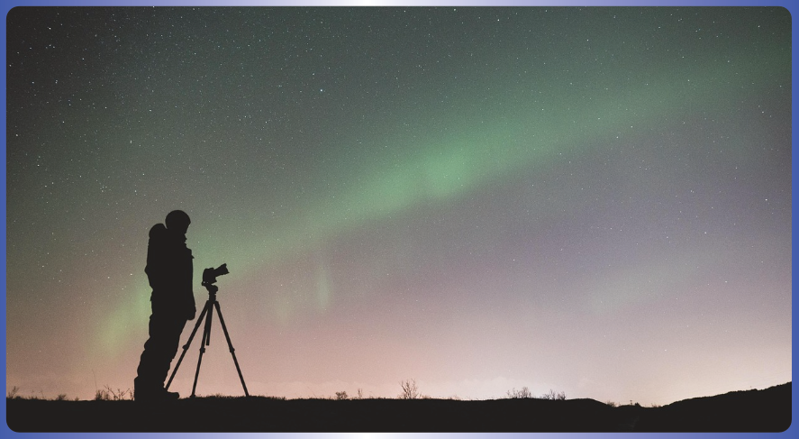
Cada disciplina organiza su conocimiento mediante estructuras que le son propias —con frecuencia, jerarquías que representan el fenómeno en niveles—. Esas jerarquías son herramientas de análisis indispensables. McDee‑11 es un marco de trabajo donde representaciones generadas desde distintas jerarquías pueden coexistir, relacionarse y dialogar sin necesidad de adoptar una única estructura organizativa.
Cada conexión es un adaptador que establece una correspondencia entre dos o más capas de observación, bajo un contexto que incluye marcos epistemológicos y criterios de observación.
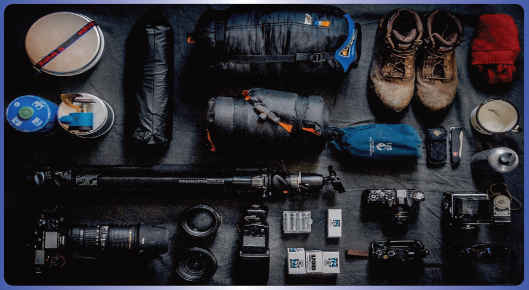
Toda observación puede entenderse como una representación contextual de un mismo fenómeno. McDee‑11 es un marco de trabajo organizacional que permite representar, preservar, relacionar y reinterpretar esas representaciones, permitiendo mantener diálogos entre diferentes lenguajes.
El marco de trabajo McDee‑11 se fundamenta en la ciencia establecida y propone una infraestructura de tipos organizacionales abstractos basada en composición, diseñada para coordinar las capacidades de observación que la ciencia ya ha validado. El objetivo es crear una red de comunicación interdisciplinar donde distintas metodologías puedan dialogar sin necesidad de abandonar su propio lenguaje.
McDee‑11 es un marco de trabajo diseñado para preservar el contexto en el que esas preguntas fueron respondidas, relacionar las representaciones resultantes y facilitar el diálogo entre distintos marcos metodológicos.
Este documento emplea la fotografía como lenguaje pedagógico. Las escenas del estudio, los acetatos, el archivador y el cinema multisalas no constituyen el modelo, sino un recurso divulgativo diseñado para hacer accesibles conceptos que, de otro modo, requerirían una formalización matemática extensa. Cada metáfora ha sido seleccionada con un propósito específico: ilustrar un operador o una relación organizacional. El modelo McDee‑11 no depende de la analogía; la analogía es el vehículo que permite recorrerlo sin necesidad de un lenguaje técnico previo.
Para profundizar en las definiciones formales, consulte el Documento Formal de la red documental McDee‑11. Para aprender cómo aplicar el procedimiento, consulte el Documento Metodológico.
📑 Índice
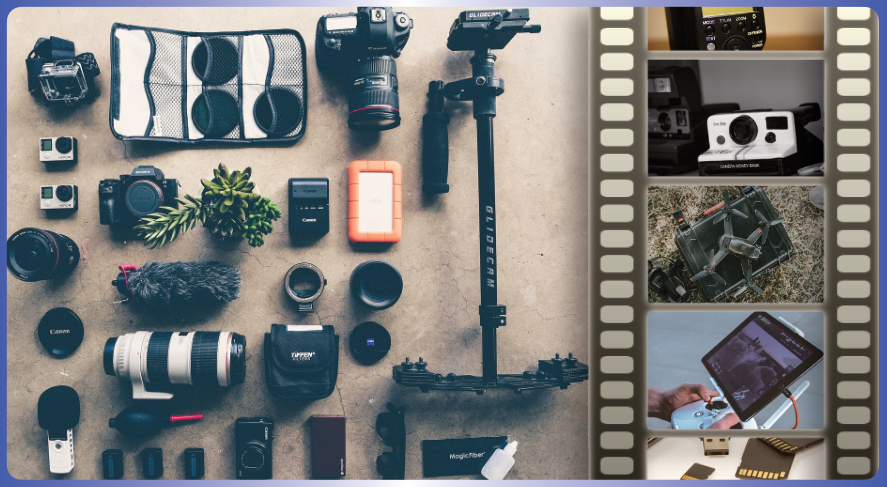
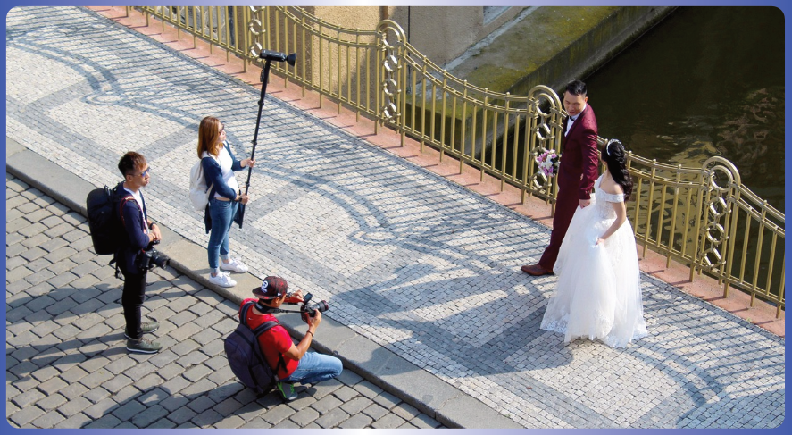
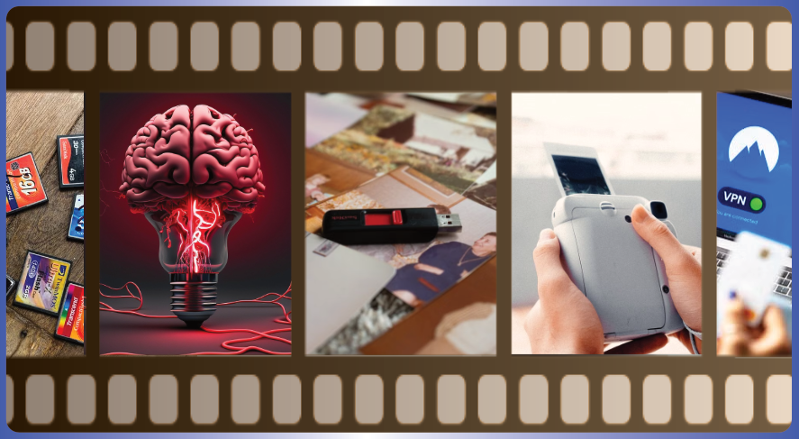
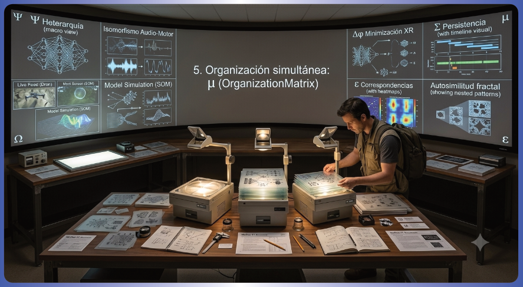
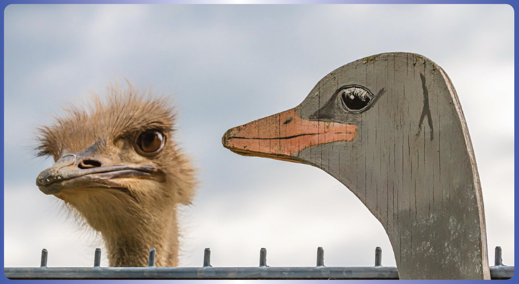
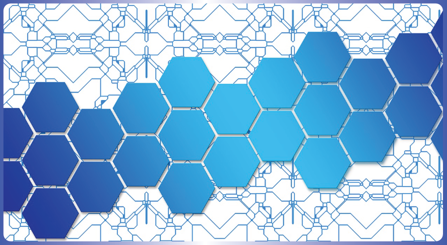
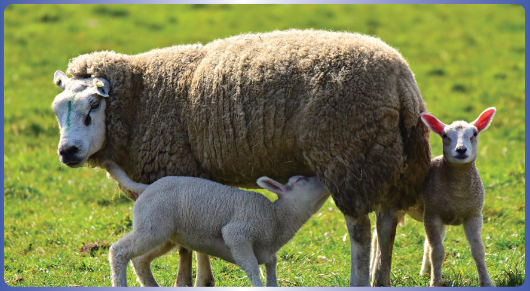
1. La fotografía como lenguaje organizacional
Cuando se piensa en una fotografía, suele imaginarse una imagen congelada en el tiempo. Sin embargo, la fotografía no es el objeto de estudio: es el lenguaje pedagógico que permite comprender cómo se organizan las observaciones. En ella interactúan la luz, la escena, la cámara, el instante de captura, la memoria donde se almacena, las imágenes con las que posteriormente será comparada y las interpretaciones que distintos observadores realizan sobre ella. Cada uno de estos elementos mantiene conexiones con los demás, formando una estructura organizada.
Una fotografía no surge de manera aislada. Es el resultado de la organización previa del entorno observado, del instrumento que lo registra y del contexto desde el cual quien observa decide cómo capturarlo. Antes de que exista una fotografía, ya existían múltiples sistemas complejos organizándose: quien está detrás de la cámara, la óptica, la escena, la iluminación, la evolución tecnológica, incluso la cultura fotográfica. La fotografía no crea la organización: es consecuencia de ella. Y, al mismo tiempo, una vez creada, deja de ser únicamente un resultado: pasa a convertirse en un nuevo elemento organizador que permite establecer comparaciones, construir memoria y generar nuevas representaciones.
En McDee‑11 esa organización se describe mediante una red de relaciones. Desde el comienzo se emplea la teoría de grafos como lenguaje formal y visual para representar relaciones organizacionales, sin afirmar que el fenómeno observado tenga estructura de grafo. La fotografía actúa como vehículo narrativo; la teoría de grafos proporciona la infraestructura que hace visible la organización subyacente.
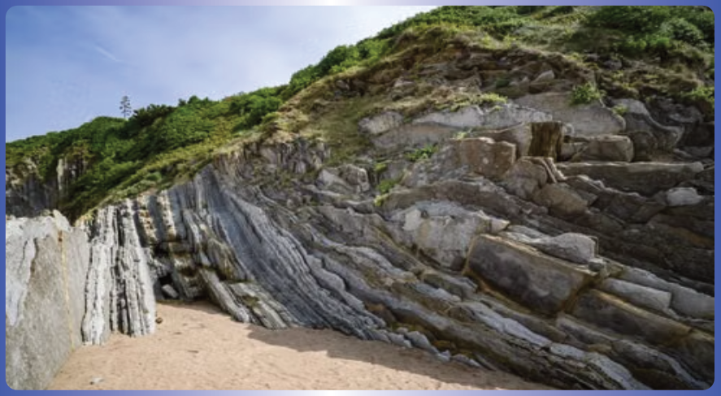
Lo que comienza como un simple clic va desplegándose en capas sucesivas —el acetato, el archivador, la sala de proyección, el cinema multisalas— donde cada capa conserva a la anterior, la amplía y nunca la reemplaza.
Al observar un sistema dinámico —un ecosistema, una red neuronal, el flujo de una corriente— el investigador se enfrenta a una cuestión fundamental: para capturar más detalles del instante se necesitan varias cámaras, que incluso pueden tener puntos de interés diferentes pero asociados a un punto de interés base. Una sola cámara no puede abarcar todas las dimensiones del fenómeno. McDee‑11 ofrece un flujo de trabajo donde cada contexto de observación queda documentado, y donde las representaciones pueden persistir, organizarse, compararse y reinterpretarse sin perder su identidad.
Conviene adelantar una distinción que resultará esencial. El paisaje que se fotografía tiene sus propias escalas naturales —el grano de arena, la hoja, el árbol, el bosque, la montaña— que emergen del propio entorno y de los fundamentos físicos del fenómeno. Las capas de observación —la fotografía visible, la infrarroja, la térmica, la nocturna— son, en cambio, decisiones de quien observa. La escala pertenece al fenómeno; la capa pertenece a quien observa. McDee‑11 no sustituye las escalas propias del sistema; organiza las capas desde las cuales se observan.
👁️ Quien observa puede desempeñar distintos papeles
A lo largo de este recorrido aparecerán distintos observadores: quien fotografía, quien edita, quien archiva, quien restaura, quien analiza. No es necesario imaginar personas diferentes. En muchos casos todos esos papeles corresponden al mismo individuo, que observa la misma fotografía desde perspectivas distintas según la tarea que realiza en cada momento. Lo que cambia es el aspecto de su organización que cada observador decide explorar. Las diferentes descripciones no compiten entre sí: son proyecciones complementarias de un mismo fenómeno organizacional.
Pero el marco de trabajo no se limita a las ciencias o la técnica. Otras miradas —la literatura, las humanidades, la cultura, la legislatura— también constituyen capas de observación válidas. A partir de una fotografía pueden nacer múltiples interpretaciones literarias: una misma imagen puede inspirar un poema, un relato, una crónica o una reflexión filosófica. Cada texto es una capa de observación diferente, y todas ellas dialogan con la imagen original sin sustituirla. La literatura, como las ciencias, también organiza observaciones. Así, distintas perspectivas no compiten, sino que se complementan para enriquecer la comprensión del fenómeno.
Se ha escogido la fotografía como lenguaje pedagógico porque constituye una experiencia ampliamente compartida y permite ilustrar de forma intuitiva la construcción de representaciones, su persistencia, organización, comparación y reinterpretación. Sin embargo, la misma organización podría explicarse mediante otras actividades humanas —una biblioteca, un laboratorio, una cocina, una orquesta, una red logística, una partida de ajedrez— sin modificar el formalismo.
Lo que cambia es la metáfora; la organización permanece invariante. Esta propiedad, que el propio documento ejemplifica al utilizar la fotografía como dominio narrativo, es en sí misma una manifestación del comportamiento esperado de Independencia del Sustrato: el marco de trabajo McDee‑11 no depende del dominio concreto desde el cual se expone. Diferentes documentos pedagógicos —McDee‑11 desde una cocina, McDee‑11 desde una biblioteca, McDee‑11 desde un laboratorio— serían proyecciones narrativas distintas de la misma arquitectura organizacional subyacente.
2. La mochila de herramientas (Ψ · Psi)
Antes de que exista un contexto documentado, quien observa ya explora el entorno. Recorre el paisaje, examina la luz, reconoce las herramientas disponibles e incluso descubre capacidades que desconocía. Esa exploración pertenece al proceso humano de investigación y puede conducir a redefinir el propio contexto de observación. Una vez documentado dicho contexto, McDee‑11 le asigna el símbolo Ψ (Psi), que representa el conjunto de condiciones bajo las cuales se realiza una observación: qué instrumento se utiliza, con qué configuración, bajo qué protocolo, con qué criterio y con qué propósito. Documentar Ψ es lo que permite que una observación pueda ser comprendida, auditada y replicada posteriormente.
📷 La mochila del estudio fotográfico
En el estudio hay una mochila que contiene varios instrumentos:
• Una cámara térmica, sensible a diferencias de calor.
• Una cámara réflex con película de alta sensibilidad, que captura texturas con grano característico.
• Una cámara digital de alta resolución, que registra detalles finos en color.
• Un dron equipado con cámara y enlace inalámbrico, que permite observar desde el aire y transmitir en tiempo real.
Ninguna es "mejor" que otra. Cada una contiene una memoria técnica acumulada y fue diseñada para observar propiedades diferentes del mismo sistema. En la analogía, Ψ es la ficha donde se anota cuál de ellas se utilizó, junto con la configuración, el criterio y el propósito de la observación.
La mochila es la metáfora del acervo del conocimiento humano: todas las herramientas coexisten en una heterarquía pura. Un biólogo entiende que Ψ permite documentar si se ha fijado la capacidad estructural de un microscopio electrónico o la dinámica de un marcador fluorescente. Un astrónomo ve que Ψ permite registrar la opción por ondas de radio o rayos X. Un científico de datos comprende que Ψ permite documentar si se ha empleado una proyección lineal o una no lineal. En todos los casos, Ψ documenta el contexto de observación completo para que el proceso pueda ser auditado y replicado. → Doc Formal
3. El acto de discretizar la observación (Ω · Omega)
Una vez que el contexto Ψ está documentado, las capacidades de observación están disponibles, pero todavía no se ha producido ninguna adquisición concreta. El paso que convierte esa potencialidad en una observación real puede representarse mediante Ω (Omega). En McDee‑11, Ω no es simplemente el clic del obturador: representa el acto de discretizar una capacidad de observación.
Ω representa el acto por el cual, dentro del espacio continuo de posibilidades definido por Ψ, se selecciona un instante, una configuración y un encuadre concretos. Esas variables de decisión —humanas o automáticas— determinan qué se observa, cómo, cuándo y desde qué perspectiva. De todas las fotografías posibles que la mochila permite tomar, Ω representa la discretización de exactamente una. Y al hacerlo, produce una representación discreta (κ) que, precisamente por ser discreta, ya puede ser almacenada, comparada y reinterpretada. La discretización es, en sí misma, lo que hace archivable el evento.
En el estudio, alguien ajusta el diafragma, encuadra, contiene la respiración y dispara. Pero Ω no es solo ese instante final. Incluye también la decisión de haber escogido el teleobjetivo en lugar del gran angular, de haber esperado a que el pájaro cruzara el encuadre, de haber modificado la sensibilidad ISO porque una nube cubrió el sol. Todo ese proceso —la selección dentro del espacio de posibilidades— queda representado mediante Ω. El clic es la manifestación visible de la discretización: el continuo de luz y tiempo se convierte en un registro discreto.
Formalmente, Ω representa la documentación del hecho de la adquisición junto con su instante temporal, la configuración del sensor en el momento exacto y cualquier variable de decisión relevante. Es el operador que garantiza que la observación no se diluya en la representación: una cosa es haber mirado y otra distinta es lo que se vio. McDee‑11 permite representar ambas para que la trazabilidad pueda recorrer el camino completo desde la capacidad hasta la comparación entre representaciones. → Doc Formal
Estos tres primeros operadores forman una secuencia natural:
Ψ representa las posibilidades de observación (el espacio continuo).
Ω representa la discretización de una de esas posibilidades bajo un conjunto de decisiones.
κ representa la capa discreta obtenida como resultado de esa discretización.
En la analogía fotográfica, Ψ es la mochila con todas las cámaras; Ω es la elección de una de ellas, el encuadre y el momento del disparo —la discretización del continuo—; κ es la imagen que queda guardada, archivable y comparable. En una sonda estratosférica, Ψ es el conjunto de sensores disponibles; Ω es la rutina que decide cuál se activa y bajo qué condiciones; κ es el paquete de telemetría registrado. El operador es el mismo; cambia el dominio de aplicación.
4. Cómo nace una representación (κ · Kappa)
Inmediatamente después del acto de discretizar la observación, el sistema conserva una representación organizada: una capa que en McDee‑11 se denomina κ (Kappa). Cada κ es una fotografía, un acetato, una proyección concreta del fenómeno. Toda κ que existe en el sistema nació de un acto de discretización Ω, pero no se reduce a él. κ representa la capa que conserva tanto los valores registrados como la estructura que los organiza.
En la analogía, κ es el acetato impreso que se coloca en una de las pantallas de la sala de proyección. Si el contexto de observación incluía el dron con su configuración y criterio, κ podría contener tanto la imagen aérea como los metadatos de telemetría.
La fotografía no captura la realidad: captura una proyección de la realidad. Un mismo árbol puede ser fotografiado por una cámara analógica, una digital, una infrarroja, una térmica, una con gran angular y una macro. Cada fotografía es diferente; ninguna es falsa. Cada una resalta relaciones distintas del mismo fenómeno. Si esas imágenes se imprimieran sobre acetatos transparentes y luego se superpusieran cuidadosamente, emergería una representación más rica del fenómeno original. Ninguna capa sustituye a las demás; todas contribuyen a la organización final. → Doc Formal
Una misma escena puede representarse de formas diferentes sin modificar el fenómeno observado. En la analogía fotográfica existen, al menos, tres grados de libertad independientes, todos ellos contenidos dentro del contexto de observación:
1. Instrumento. Cambiar la cámara modifica la forma en que se registra la información del fenómeno. Una cámara RGB, una térmica o una infrarroja producirán representaciones diferentes del mismo paisaje.
2. Configuración instrumental. Manteniendo el mismo instrumento y punto de observación, se puede cambiar el objetivo, la distancia focal o los parámetros de captura. Un gran angular y un teleobjetivo generan representaciones distintas, aunque el sensor sea el mismo.
3. Criterio de observación. Con exactamente el mismo equipo y la misma posición, quien observa puede dirigir su atención hacia diferentes regiones o propiedades de la escena. Una representación puede centrarse en la copa de un árbol, otra en el sotobosque y otra en la textura de una hoja. Lo que cambia no es el fenómeno, sino la pregunta que se formula sobre él.
Conviene precisar una distinción fundamental. El paisaje fotografiado posee escalas naturales —el grano de arena, la hoja, el árbol, el bosque, la montaña— que emergen del propio entorno y de los fundamentos físicos del fenómeno. Lo que quien fotografía decide es qué capas de observación construir: fotografía visible, infrarroja, térmica, nocturna, con distintas exposiciones. Las capas no modifican las escalas del paisaje; organizan distintas observaciones de esas escalas. La escala pertenece al fenómeno; la capa pertenece a quien observa.
Cada fotografía no contiene únicamente una imagen. También conserva la información necesaria para comprender cómo fue obtenida: con qué cámara, bajo qué condiciones, con qué propósito. Esa información acompaña siempre a la representación y permite volver a interpretarla más adelante. En el Documento Formal se detalla la estructura interna de κ mediante propiedades como ρ (las interfaces que exponen información), ϖ (los valores concretos) y w (la ponderación o relevancia de cada propiedad). → Doc Formal
5. Persistencia (Σ · Sigma)
Una capa κ debe poder permanecer disponible en el tiempo. Esta capacidad de persistencia puede representarse en McDee‑11 mediante el símbolo Σ (Sigma). Σ representa la entidad organizacional que permite documentar la preservación de una representación y su continuidad a través del tiempo y de distintos sustratos. La persistencia no implica conservación perfecta: las representaciones permanecen expuestas a las restricciones del entorno y del medio en el que residen.
Horas más tarde, la misma persona —ahora con las manos sobre el teclado— copia la imagen en varias carpetas, etiqueta, fecha, asigna palabras clave. La tarjeta de memoria no solo guarda imágenes; guarda también las relaciones entre ellas: qué foto se tomó antes, cuál después, con qué configuración. Quien archiva está construyendo un repositorio de estados y conexiones, trazando rutas entre nodos que luego podrán recorrerse.
Σ no representa un almacén perfecto. Es una entidad organizacional que permite documentar la preservación, cuya eficacia depende de las condiciones del entorno y del sustrato. Un disco puede fallar, una fotografía puede desteñirse, una memoria humana puede olvidarse. Σ permite representar la intención de preservar; el entorno impone sus restricciones. El resultado emerge de esa interacción. → Doc Formal
En la analogía del estudio, Σ es el archivador donde se guardan los acetatos. Años después, algunos siguen intactos; otros tienen polvo, se rayaron, se perdieron. El archivador permitió preservarlos; no pudo impedir completamente el efecto del tiempo.
6. Organización por capas (μ · Mu)
Las representaciones persistidas pueden disponerse como un conjunto organizado de capas de observación. Esta organización por capas se representa mediante μ (Mu). En la analogía, μ ya no es simplemente un collage: representa la superposición organizada de todos los acetatos compatibles. Se coloca una transparencia sobre otra, alineando cuidadosamente las referencias comunes. Al principio se distingue una capa, luego dos, luego cinco. La imagen completa nunca estuvo en un solo acetato: emergió de la organización de todas ellas. Cada acetato constituye una capa de relaciones. La organización conjunta de todas ellas forma una red de capas donde unas representaciones complementan a otras.
Esta organización por capas no altera las escalas del paisaje original. El árbol y el bosque siguen ahí, con sus propiedades físicas. Lo que cambia es la riqueza de las capas que quien observa ha decidido construir para comprenderlos. μ representa la organización de las representaciones que se han generado a partir del fenómeno, sin modificarlo.
Ahora, la misma persona se coloca frente al panel de transparencias. Ya no dispara la cámara; dispone. No juzga la escena, juzga la organización: el contraste aquí, la saturación allá, la proximidad entre dos imágenes que parecen dialogar. Cada acetato ocupa un lugar en la superposición, pero lo importante no es su posición: son las líneas invisibles que se trazan mentalmente entre ellas, conectando unas con otras por similitud, contraste o secuencia.
μ no guarda las capas (eso lo hace Σ), sino que las dispone para que quien observa decida qué comparar y desde qué perspectiva. Además, en μ pueden coexistir múltiples mapas de relaciones sobre el mismo conjunto de capas, cada uno construido con un criterio de comparación diferente. → Doc Formal
7. Comparación (Φ · Phi)
Para examinar la relación entre dos capas, quien observa utiliza un adaptador que en McDee‑11 se denomina Φ (Phi). Φ no es una función única, sino una familia de adaptadores; cada uno representa un modo distinto de establecer criterios de comparación. Φ representa el adaptador mediante el cual pueden relacionarse dos capas sin modificar su contenido. Selecciona qué aspectos de cada capa participan en la comparación y define cómo se traducen entre sí. En la analogía de los acetatos, Φ representa el dispositivo que permite alinear dos transparencias para que puedan compararse correctamente.
🔌 El adaptador en la sala de proyección
La sala dispone de distintos tipos de proyectores y pantallas. Para comparar la imagen proyectada por un proyector digital con la de un panel LED, se necesita un adaptador específico. Existen adaptadores para emparejar señales de distinto tipo, para traducir gamas de colores entre tecnologías diferentes, o para acoplar directamente las matrices de píxeles cuando ambas pantallas comparten resolución nativa.
Así, las responsabilidades quedan perfectamente separadas: las capas ofrecen información, y los adaptadores representan el criterio mediante el cual se comparan. Φ proporciona el criterio, pero no el resultado numérico. Ese resultado corresponde al siguiente operador. → Doc Formal
8. Correspondencia (ε · Épsilon)
El resultado de aplicar un adaptador Φ sobre dos capas es un valor que cuantifica su correspondencia, y que en McDee‑11 se denomina ε (Épsilon). Un valor alto indica que ambas capas se corresponden fuertemente bajo el criterio elegido; un valor bajo indica que apenas presentan correspondencia bajo dicho criterio. ε representa el valor de correspondencia obtenido mediante un adaptador Φ.
Al caer la noche, la misma persona se sienta frente a las transparencias con la tableta en la mano. Ya no dispara, no archiva, no dispone: compara. Va señalando pares de acetatos y observando el número que aparece en la pantalla auxiliar. Si aplica el mismo adaptador a todas las parejas, obtiene una matriz completa de valores. Esa matriz es un nuevo grafo, construido sobre el anterior.
ε no está predefinido por el formalismo. Es la salida de un adaptador Φ elegido para cada caso. En biomecánica, ε puede ser una distancia temporal entre patrones de marcha; en literatura, una medida de similitud semántica; en derecho, un criterio de compatibilidad entre marcos normativos; en imágenes, un índice de similitud estructural. La responsabilidad de definir qué significa «correspondencia» en cada caso recae sobre el adaptador, no sobre McDee‑11. → Doc Formal
Los valores ε se organizan naturalmente en matrices de correspondencia cuando se aplica un mismo adaptador Φ a múltiples pares de capas. Dichas matrices —que no son sino la matriz de adyacencia del grafo de relaciones— pueden ser persistidas mediante Σ. Y, cuando se decide tratarlas como una nueva representación, se convierten en una nueva capa κ, lista para ser observada con nuevos adaptadores. De este modo se cierra el ciclo organizacional sin introducir nuevos elementos: la matriz de ε es, simultáneamente, el resultado de una comparación y el punto de partida de una nueva observación.
Hasta este punto hemos recorrido McDee‑11 mediante la metáfora del estudio fotográfico. Cada uno de los siete operadores —Ψ, Ω, κ, Σ, μ, Φ, ε— ha sido presentado con una escena reconocible: la mochila de herramientas, la discretización de la capacidad, el acetato, el archivador, la organización por capas, los adaptadores y la pantalla auxiliar.
A partir de la siguiente sección, la mirada cambia. La fotografía no desaparece, pero deja de ser el centro de la explicación y pasa a ser un caso particular de una organización más general. Lo que hasta ahora era una historia se convierte en un plano; lo que era una escena puede representarse ahora mediante un grafo de relaciones.
9. Del estudio fotográfico al plano de conexiones
Si se observa el estudio fotográfico no como un espacio de trabajo, sino como una red, se descubre algo que siempre estuvo ahí. Cada cámara, cada pantalla, cada adaptador y cada tarjeta de memoria es un nodo. Las conexiones entre ellos —un cable HDMI, una señal WiFi, un adaptador— son aristas. Este plano de conexiones es el esqueleto invisible del estudio.
La Teoría de Grafos ha estado sosteniendo toda la analogía desde la primera página. La analogía no era una secuencia de ejemplos independientes. La fotografía, el acetato, el archivador, la sala de proyección y el cinema multisalas no son metáforas distintas: son capas organizacionales del mismo fenómeno, observado a diferentes escalas.
Cada capa conserva a la anterior, la amplía y nunca la reemplaza. La fotografía no es solo una imagen; el acetato no es solo un soporte; la sala no es solo un lugar; el cinema no es solo un edificio. Todos representan una capa organizacional del mismo fenómeno, y todos están conectados.
El estudio fotográfico constituye un único edificio, planta por planta:
Fotografía → Acetato → Colección de acetatos → Proyector → Sala → Cinema multisalas → Organización completa
Cada capa conserva a la anterior. La amplía. Nunca la reemplaza. La teoría de grafos no sustituye la historia; la hace visible desde otra perspectiva.
Todo sistema complejo se desarrolla en un entorno con determinadas condiciones. El paisaje que se fotografía tiene escalas naturales —el grano de arena, la hoja, el árbol, el bosque, la montaña— que emergen del propio entorno y de los fundamentos físicos del fenómeno. Esas escalas pertenecen al fenómeno.
Las capas, en cambio, son decisiones de representación. Se elige qué acetatos construir: visible, infrarrojo, térmico, nocturno. Las capas no modifican las escalas del paisaje; organizan distintas observaciones de esas escalas. La escala pertenece al fenómeno; la capa pertenece a quien observa.
| Concepto | ¿Quién lo define? | Función |
|---|---|---|
| Escala | El entorno y los fundamentos del fenómeno | Determina las propiedades naturales en las que emerge la organización. |
| Capa | Quien observa y su estrategia de representación | Organiza diferentes observaciones del mismo fenómeno. |
La fotografía puede proyectarse como una imagen, un archivo, una secuencia, una colección, una organización, un grafo, una matriz o un espacio de fases. No son fotografías distintas: son proyecciones equivalentes del mismo fenómeno.
10. Procesamiento organizacional y reinterpretación 🔄
La computadora del estudio no se limita a almacenar imágenes: puede ejecutar rutinas que automaticen la comparación de brillo, contraste o textura entre cientos de acetatos. La analogía del estudio sigue presente, pero ahora la tratamos como un dominio de aplicación entre otros posibles. En cada nivel de procesamiento, lo que la máquina construye es, en esencia, un grafo: los nodos son los patrones detectados, las aristas son las relaciones de similitud o dependencia, y la matriz de correspondencias no es más que la matriz de adyacencia de ese grafo.
Lo que hace McDee‑11 no es construir jerarquías, sino permitir la reorganización progresiva de las capas de observación. La organización resultante no es una propiedad intrínseca del sistema, sino el resultado de un acto de observación que, guiado por fundamentos, organiza estados en nuevas capas de representación.
El flujo de McDee‑11 es un ciclo continuo: documentar el contexto, ejecutar el acto de discretizar la observación, construir la representación, persistir, organizar por capas, comparar mediante adaptadores, leer las correspondencias y, finalmente, reinterpretar el conjunto de correspondencias como una nueva capa, que puede ser observada nuevamente, reiniciando el ciclo. → Doc Formal
La 🔄 Reinterpretación Organizacional es un comportamiento esperado del modelo: cualquier organización emergente (como la matriz de correspondencias) puede ser tratada como una nueva capa y, por tanto, ser observada nuevamente bajo un nuevo contexto y con nuevos adaptadores. Esta capacidad de recursividad metodológica constituye una hipótesis de trabajo que deberá ser contrastada en aplicaciones concretas.
κ₁ = imagen térmica | κ₂ = fotografía RGB
↓
Adaptador de textura (Φ)
↓
ε = 0.84
↓
todos los ε forman una nueva κ
↓
esa nueva κ puede observarse ahora
como un mapa de relaciones entre capas
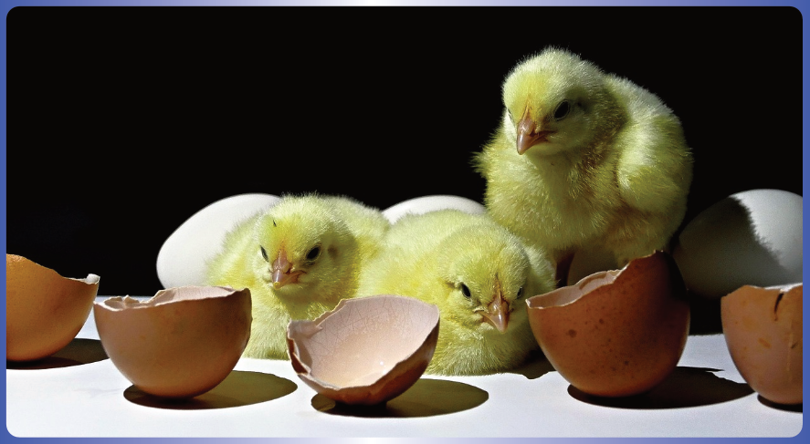
Antes de apagar la luz, quien ha estado trabajando durante horas en el estudio da un paso atrás y observa el panel completo. Ya no ve imágenes individuales, ni adaptadores, ni pantallas auxiliares. Ve la matriz de relaciones que ha ido construyendo a lo largo de la jornada. Durante horas, la misma persona ha desempeñado distintos papeles y ahora —sin haberse movido de su estudio— contempla la red de conexiones que siempre estuvo allí, esperando a ser observada.
A lo largo de todo el formalismo se observa un patrón recurrente:
↓
Organización
↓
Nueva entidad
↓
Nueva organización
↓
Nueva entidad
Este ciclo se manifiesta en cada etapa: el contexto se organiza para producir una capa; varias capas se organizan en una matriz de superposición; la matriz se procesa mediante adaptadores para generar correspondencias; la colección de correspondencias se reinterpreta como una nueva capa, y así sucesivamente.
Toda organización suficientemente estructurada puede convertirse en una nueva representación. Toda representación suficientemente documentada puede participar en una nueva organización. Esta alternancia explica la recursividad del formalismo y su capacidad de crecer sin perder trazabilidad.
10.2 Memoria recursiva: cuando una representación despliega una organización
Existe una experiencia cotidiana que ilustra el recorrido inverso a la reinterpretación organizacional. Todos hemos vivido esa escena: vemos una sola fotografía de una película —un fotograma, un póster promocional— y casi instantáneamente recordamos una escena completa. A veces incluso recordamos los diálogos, la música o las emociones asociadas. La imagen actúa como un disparador que convoca una organización mucho más amplia.
En la analogía del estudio, esta experiencia puede describirse como un juego de escalas anidadas donde la unidad organizacional que decidimos considerar como una κ cambia. Un clic (con C) genera una fotografía (κ). Muchos clics organizados producen un clip (con P): otra κ, pero de mayor escala temporal. Muchos clips producen una escena (κ). Muchas escenas producen una película (κ). Y muchas películas, una saga (κ). En todos los casos, el patrón es el mismo: una organización suficientemente estructurada puede tratarse como una nueva representación.
Ahora bien, lo fascinante ocurre en el sentido inverso. Cuando alguien ve el póster de una película que ya conoce, esa única κ —de baja resolución, estática— no contiene físicamente toda la información de la película. Sin embargo, actúa como un índice organizacional que, en presencia de la persistencia (Σ) y la organización por capas previamente construida (μ), permite reinstanciar representaciones de orden superior. La fotografía no almacena la película: reactiva las relaciones que la conectan con otras representaciones dentro del sistema.
En el lenguaje cotidiano, este fenómeno se describe como un recuerdo. En McDee‑11, sin embargo, no se interpreta en sentido psicológico, sino como una propiedad organizacional del marco: la memoria recursiva. No depende de que exista un ser humano que recuerde; depende de que existan relaciones trazables entre representaciones y de que la persistencia las conserve.
Una representación puede funcionar como un índice organizacional capaz de reinstanciar, mediante relaciones previamente persistidas, organizaciones de mayor o menor escala. La información no está contenida íntegramente en la representación pequeña; emerge de las relaciones explícitas que mantiene con otras representaciones dentro de la organización.
Es importante notar que la memoria recursiva no constituye un nuevo componente del marco, sino una propiedad emergente de la interacción entre Σ, μ y κ. Σ no fue concebida como un simple almacenamiento pasivo, sino como el espacio donde se documentan las relaciones trazables que hacen posible esta reinstanciación. μ mantiene las relaciones de transformación o correspondencia, y κ permite representar diferentes niveles de resolución. La recuperación de una organización compleja desde una representación parcial surge de la trazabilidad conservada.
Esta propiedad se manifiesta en múltiples dominios: una palabra puede reinstanciar un libro completo; una fórmula puede reinstanciar una teoría conocida; una tarjeta documental puede reinstanciar toda una red de conocimiento. En todos los casos, el mecanismo es el mismo: la representación pequeña no contiene los datos, pero sí conserva las conexiones que permiten reconstruir la organización cuando el contexto y los adaptadores adecuados están presentes.
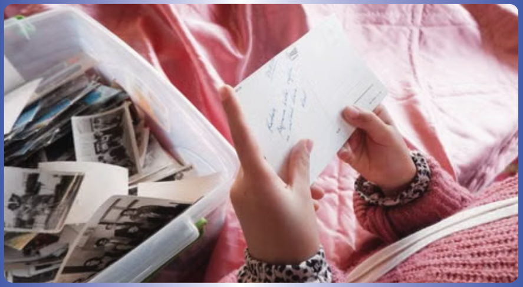
La memoria recursiva no añade un octavo operador a McDee‑11. Emerge de la interacción entre Σ (que permite documentar la preservación de las representaciones y sus relaciones), μ (que permite organizarlas por capas) y κ (que permite representar distintas escalas). Es, por tanto, un comportamiento esperado del marco, no una nueva entidad organizacional.
Junto con la reinterpretación organizacional, la memoria recursiva cierra un ciclo simétrico:
Organización → Representación (reinterpretación): una organización suficientemente estructurada se convierte en una nueva κ.
Representación → Organización (memoria recursiva): una κ puede funcionar como punto de acceso que reinstancia una organización previamente persistida.
Ambos recorridos son trazables, dependen del contexto y de los adaptadores, y no requieren nuevos símbolos. Entre ambos, describen la capacidad completa de McDee‑11 para crecer, comprimirse y volver a desplegarse sin perder la coherencia interna.
10.3 La geometría interna de los siete operadores
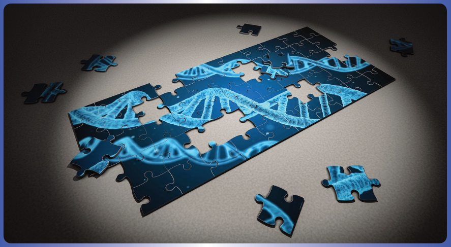
Después de recorrer los siete operadores y sus ciclos de reinterpretación y memoria, surge una pregunta natural: ¿son simplemente una lista de símbolos independientes o poseen una arquitectura interna? Si se observan no por su función individual, sino por la forma en que se agrupan, los siete operadores revelan una geometría organizacional que no depende del dominio de aplicación.
Los tres primeros operadores —Ψ (Psi), Ω (Omega), κ (Kappa)— forman la tríada del nacimiento de una representación. No son independientes: Ω media entre Ψ y κ, representando la discretización de una capacidad en una representación concreta. Es una secuencia que va de lo potencial a lo actual.
Los cuatro operadores restantes se organizan, en cambio, como dos pares complementarios. Por un lado, Σ (Sigma) y μ (Mu) trabajan juntos: uno representa la documentación de la preservación de las representaciones en el tiempo, el otro representa su organización por capas para que puedan ser observadas simultáneamente. Sin Σ, μ no tendría materiales que organizar; sin μ, Σ sería un archivo inerte. Por otro lado, Φ (Phi) y ε (Épsilon) también se complementan: uno representa el criterio de comparación entre capas, el otro representa el resultado de esa comparación. Φ sin ε carecería de salida observable; ε sin Φ no sabría qué medir.
Esta organización —una tríada que origina, seguida de dos pares que desarrollan— admite una analogía pedagógica que puede ayudar a recordarla: recuerda la lógica de ciertos sistemas biológicos basados en complementariedad, como la doble hélice del ADN, donde la estructura se construye a partir de pares que se complementan mutuamente. La analogía pretende ilustrar una organización de responsabilidades, no establecer una equivalencia biológica entre ambos sistemas.
La organización formada por la tríada Ψ–Ω–κ seguida por los dos pares complementarios Σ–μ y Φ–ε admite una representación pedagógica que recuerda la lógica de ciertos sistemas biológicos basados en complementariedad, como la doble hélice del ADN. La analogía ilustra visualmente cómo responsabilidades distintas pueden acoplarse de forma complementaria, pero no afirma que McDee‑11 describa, modele o se derive de la estructura del ADN. Es un recurso divulgativo para facilitar la memoria de la arquitectura interna, no una afirmación ontológica sobre biología molecular.
10.4 Autosimilitud organizacional: la inspiración fractal
Al observar el ciclo continuo de McDee‑11 —donde una organización genera una nueva representación, y esa representación puede, a su vez, desplegar una nueva organización— emerge un patrón que evoca un principio clásico de la geometría fractal: la autosimilitud. Sin embargo, McDee‑11 no afirma ser un modelo fractal ni utiliza las matemáticas de Mandelbrot como fundamento. Lo que toma prestado es una intuición organizacional.
En la analogía fotográfica, una imagen puede verse como un píxel dentro de un mosaico; ese mosaico puede convertirse en una nueva imagen; esa imagen puede integrarse en un mural, y así sucesivamente. Lo que se repite no es el contenido (los colores o las formas), sino la estructura relacional: la forma en que las partes se organizan para formar un todo que, a su vez, se convierte en una parte de una organización mayor.
Principio inspirador. La recursividad organizacional de McDee‑11 puede interpretarse como una forma de autosimilitud organizacional: los mismos patrones de relación reaparecen en distintas escalas sin necesidad de conservar el mismo contenido.
| Concepto | Definición | Ámbito |
|---|---|---|
| Autosimilitud geométrica | Propiedad formal de ciertos objetos matemáticos donde la estructura se replica de manera exacta o estadística al cambiar la escala. | Geometría fractal, sistemas dinámicos. |
| Autosimilitud organizacional | Conservación de patrones de relación, correspondencias y estructuras funcionales a través de diferentes niveles de representación. | Marcos de trabajo, gestión documental, trazabilidad. |
McDee‑11 no propone una equivalencia con la geometría fractal ni utiliza la autosimilitud como una demostración matemática del marco; la referencia fractal funciona únicamente como una analogía organizacional para facilitar la interpretación de relaciones recursivas. La identidad no reside en cada elemento aislado, sino en la preservación de las relaciones entre los elementos.
Esta perspectiva conecta de forma natural con la memoria recursiva (sección 10.2): una κ de baja resolución puede reinstanciar una organización de orden superior porque ambas participan de una organización autosimilar. Y conecta también con la reinterpretación organizacional: la emergencia de una nueva κ a partir de una matriz de correspondencias es, en esencia, la manifestación del mismo patrón relacional operando en una nueva escala. De este modo, la autosimilitud organizacional no es un agregado externo, sino una forma de describir la recursividad que ya existía en el marco.
Del mismo modo que una matriz de correspondencias puede convertirse en una nueva capa, el propio contexto de observación Ψ puede ser el resultado de un ciclo organizacional previo. La ciencia no solo observa el mundo: también desarrolla nuevas formas de observarlo, y esas nuevas capacidades —nuevos instrumentos, nuevos protocolos, nuevos algoritmos— se incorporan a Ψ para ciclos posteriores. Así, el marco no distingue entre «modo aplicación» y «modo investigación»: ambos son instanciaciones del mismo ciclo, aplicado a distintos objetos organizacionales. Unas veces el fenómeno es el objeto de estudio; otras, también lo son las herramientas y los contextos de observación. La arquitectura permanece idéntica.
El marco de trabajo McDee‑11 sirve de infraestructura organizacional para el marco de control PIDCA (Proporcional, Integral, Diferencial, Complementario y Adaptativo). No se afirma una igualdad absoluta entre componentes PIDCA y entidades McDee‑11, sino que bajo una determinada proyección organizacional, las entidades pueden desempeñar funciones compatibles con los siguientes componentes:
- P – Proporcional: la capa actual puede funcionar como lectura instantánea del sistema.
- I – Integral: la persistencia puede funcionar como memoria que acumula la historia de capas.
- D – Diferencial: un adaptador específico puede evaluar la tasa de cambio entre capas consecutivas.
- C – Complementario: pares de respuestas acopladas pueden modelarse como capas que se estabilizan mutuamente, de forma análoga a las bases nitrogenadas del ADN.
- A – Adaptativo: la matriz de correspondencias puede convertirse en una nueva capa que modifica dinámicamente el contexto de observación.
Así, McDee‑11 no prescribe una correspondencia fija entre sus operadores y los componentes de PIDCA. Proporciona, en cambio, la infraestructura para que dicha correspondencia emerja de manera trazable según el dominio de aplicación. → Doc Formal
11. Comportamientos esperados 🧭
⚠️ Aclaración importante: Los siguientes no son operadores del marco, sino comportamientos esperados que emergen al instanciar los siete operadores invariantes (Ψ, Ω, κ, Σ, μ, Φ, ε) en un dominio concreto. Describen cómo debería comportarse el marco de trabajo, pero no añaden nuevos símbolos al formalismo.
Los siguientes no son leyes ni principios del modelo, sino comportamientos esperados que describen cómo debería funcionar el marco de trabajo McDee‑11. Su validez dependerá de la coherencia formal y de la validación en aplicaciones concretas. Se presentan junto con su manifestación en el estudio fotográfico para facilitar su comprensión. → Doc Formal
📝 Explicitación de Criterios. Se espera que todo contexto de observación y cada adaptador empleado queden documentados. Esto garantiza reproducibilidad, auditabilidad y automatización.
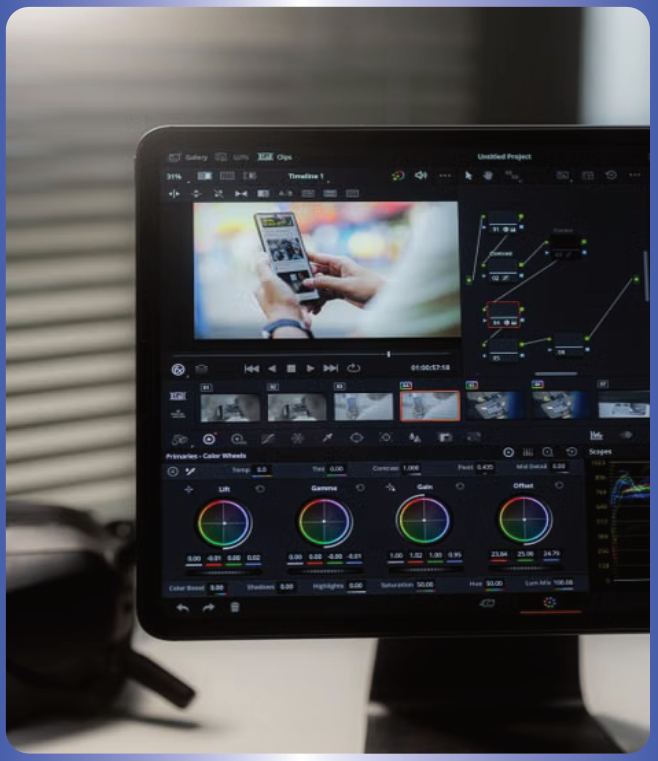
En el estudio: Antes de comenzar la sesión, se anota qué cámara se utilizará, qué lente se ha montado, qué filtro se ha colocado y con qué propósito. Meses después, otra persona podrá repetir exactamente la misma sesión.
⏳ Desfase, no error. Se espera que el valor de correspondencia no mida un "error" absoluto, sino el grado de correspondencia o desfase contextual entre dos capas, según el adaptador elegido.
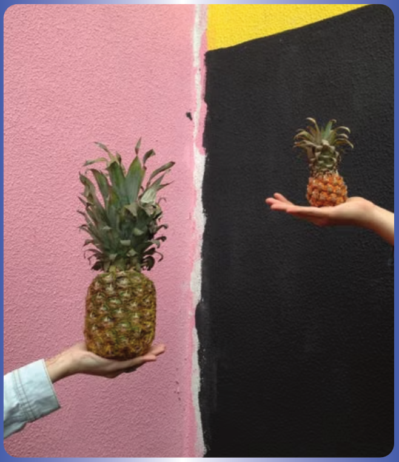
En el estudio: Dos fotografías del mismo paisaje no coinciden perfectamente. Una fue tomada al amanecer con cámara térmica, otra al mediodía con cámara digital. La diferencia no es un error: es un desfase asociado a las condiciones de observación.
🔄 Reinterpretación Organizacional. Se espera que cualquier organización emergente pueda convertirse en una nueva capa y ser observada bajo nuevos contextos, preservando la autosimilitud del formalismo a cualquier escala.
En el estudio: Después de comparar cientos de fotografías, se construye un gran mapa donde cada línea une imágenes similares. Días después, se estudia ese mapa como si fuera una nueva fotografía.
🧠 Memoria Recursiva. Se espera que una representación pueda reactivar, de manera trazable, organizaciones previamente construidas, permitiendo que una capa de menor resolución funcione como punto de acceso a representaciones de mayor complejidad. La información no está contenida íntegramente en la representación de menor escala; emerge de las relaciones explícitas que mantiene con otras representaciones dentro de la organización.
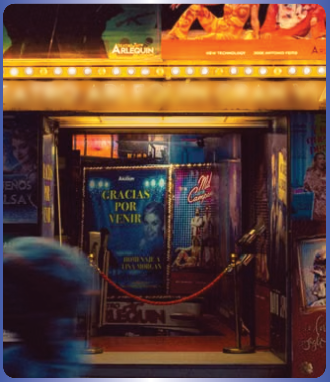
En el estudio: Un solo fotograma promocional no contiene la película entera, pero quien la ha visto puede reconstruir la escena, el clip, incluso la banda sonora. La fotografía funciona como un índice organizacional que, en presencia de la persistencia, reinstancia una organización de orden superior.
🧱 Independencia del Sustrato. Se espera que la identidad de una capa no dependa del soporte físico, pudiendo migrar entre distintos medios sin pérdida de continuidad.
En el estudio: Una imagen se conserva en la tarjeta de memoria, se imprime en papel fotográfico y se proyecta posteriormente en la sala. La identidad de la fotografía no depende del medio en el que se encuentre.
🗃️ Composición Organizacional. Se espera que cada símbolo de McDee‑11 represente una entidad organizacional compuesta, y que el formalismo opere sobre la entidad completa, aislando los detalles de implementación.
En el estudio: Se habla de "la cámara" como un único objeto, aunque internamente contenga sensor, obturador y procesador.
📈 Escalabilidad Organizacional. Se espera que las tareas repetitivas de organización, persistencia y comparación puedan automatizarse en diferentes escalas, preservando la trazabilidad de cada etapa.
En el estudio: Al principio se organizan diez imágenes manualmente. Más adelante hay que clasificar diez mil. La computadora las indexa, busca y agrupa automáticamente.
💻 Organización Computable. Se espera que la explicitación de contextos, condiciones de observación, representaciones, persistencia y criterios de comparación genere una estructura que pueda ser procesada por herramientas computacionales.
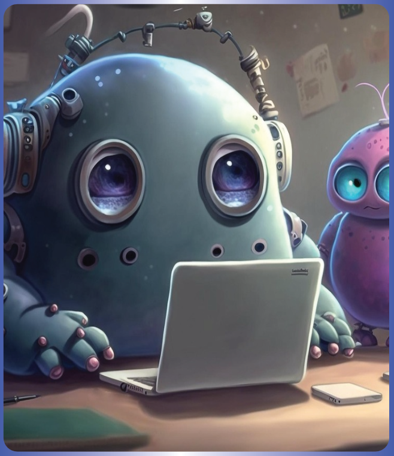
En el estudio: La computadora no solo almacena imágenes; ejecuta rutinas que automatizan la comparación de brillo, contraste o textura entre cientos de acetatos.
🔁 Retroalimentación Interpretativa. Se espera que el análisis se estructure como un ciclo cooperativo: las herramientas computacionales automatizan la organización y comparación; quien observa interpreta los resultados y redefine los contextos o los adaptadores para el siguiente ciclo.
En el estudio: La computadora sugiere agrupaciones de imágenes basadas en similitudes de color, pero es quien observa quien decide si esas agrupaciones tienen sentido. A partir de esa decisión, ajusta los adaptadores o redefine el contexto.
🧷 Preservación Explícita del Contexto. Se espera que ninguna representación exista de forma aislada. Toda capa está vinculada al contexto que la generó, al acto que la produjo y al medio que la preserva. Esta vinculación es lo que permite que distintas representaciones del mismo fenómeno puedan compararse, reinterpretarse y dialogar sin perder su identidad.
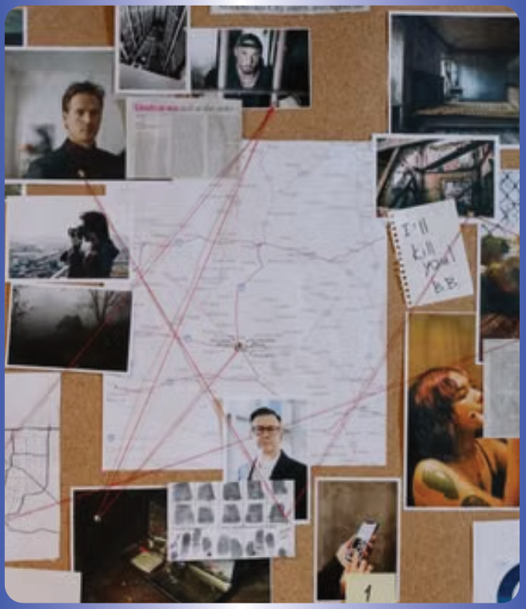
En el estudio: Una fotografía no vale solo por lo que muestra, sino porque se sabe con qué cámara fue tomada, en qué condiciones, con qué propósito y dónde está almacenada.
11.1 Consecuencia metodológica: relatividad organizacional de las interpretaciones
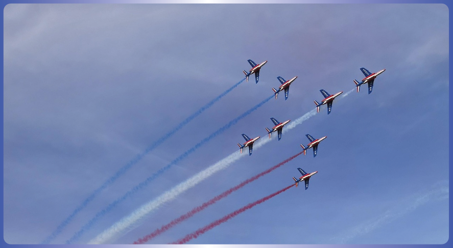
Del conjunto de comportamientos esperados se desprende una consecuencia metodológica profunda:
Ninguna interpretación establecida dentro de McDee‑11 posee carácter absoluto. Toda correspondencia, agrupación o equivalencia depende de la capa de observación, del contexto, del adaptador empleado y del propósito con el que se realiza la representación.
Esta afirmación no es un nuevo comportamiento esperado, sino la manifestación conjunta de varios ya documentados. Cada símbolo representa una entidad organizacional compuesta cuya identidad formal permanece estable. Sin embargo, la función que desempeña dentro de una organización depende de la instanciación concreta en cada dominio de aplicación. En consecuencia, las funciones que desempeñan las entidades pueden variar según la capa de observación, sin que ello implique modificar su identidad formal.
Tipos invariantes y funciones organizacionales covariantes
Lo que cambia no es la identidad del operador, sino la función organizacional que desempeña dentro de una determinada composición. Puede establecerse una analogía parcial con algunos enfoques relacionales presentes en la teoría de categorías, donde el significado de un objeto depende de las relaciones que establece. Esta comparación tiene únicamente un propósito ilustrativo.
Dependencia del marco organizacional
Ninguna entidad organizacional en McDee‑11 posee un significado operativo independiente del marco organizacional desde el cual es instanciada. Las funciones, los pesos, los adaptadores, los criterios de agrupación e incluso la definición práctica de sus propiedades dependen de la proyección organizacional concreta. Esta dependencia no es una limitación: es la propiedad que permite que el formalismo se mantenga abierto a nuevas capas, nuevos contextos y nuevos adaptadores sin necesidad de modificar su infraestructura fundamental.
En consecuencia, la aparición de nuevos adaptadores, nuevos criterios de observación o nuevos contextos no invalida interpretaciones anteriores; simplemente amplía el espacio de proyecciones organizacionales disponibles.

Una misma entidad A puede ser interpretada como B bajo un marco organizacional y como C bajo un marco diferente.
No cambió la entidad A. Cambió el marco organizacional desde el cual se la está interpretando.
McDee‑11 no asigna significados universales a sus entidades organizacionales. Es un marco de trabajo para que esos significados emerjan de manera trazable según el contexto, la capa de observación, la proyección y los adaptadores empleados. Esta propiedad explica por qué la recursividad y la reinterpretación producen interpretaciones diferentes sin romper la coherencia interna: las entidades permanecen estables, mientras que las funciones que desempeñan emergen de la organización en la que participan.
12. Ámbitos potenciales de aplicación
Debido a que McDee‑11 describe la organización de representaciones, persistencia, comparación y reinterpretación de información sin depender del sustrato físico, el formalismo puede emplearse en múltiples dominios donde existan procesos de observación trazables.
Las investigaciones desarrolladas por el Grupo de Investigación DIGITI de la Facultad Tecnológica de la Universidad Distrital Francisco José de Caldas —institución donde el autor se formó como Tecnólogo en Electrónica— inspiraron la formulación del problema organizacional que motivó el desarrollo de McDee‑11. En proyectos como el análisis de la marcha protésica o el desarrollo de instrumentación aeroespacial se hizo evidente que comprender un mismo fenómeno con frecuencia requiere integrar múltiples instrumentos, disciplinas, metodologías y criterios de observación. Esa situación no es exclusiva de dichos proyectos: puede observarse en numerosos contextos de investigación contemporánea. Con frecuencia, el desarrollo científico incorpora nuevos instrumentos, metodologías y marcos de representación que permiten observar un mismo fenómeno desde perspectivas complementarias. McDee‑11 se propone como un marco de trabajo para facilitar la organización trazable de las relaciones entre esas representaciones, preservando la identidad y el contexto propios de cada una, sin sustituir los fundamentos científicos de las disciplinas que las generan. McDee‑11 no estudia a los investigadores como personas ni pretende modelar el proceso cognitivo de investigar. Se centra en la organización trazable de las representaciones generadas durante procesos de observación, análisis, diseño o investigación, así como en las relaciones que pueden establecerse entre ellas. En ese sentido, no organiza el conocimiento mismo, sino las relaciones entre sus representaciones.
Además del contexto académico que inspiró la formulación del problema organizacional, yo, el autor de este documento, identifico un segundo contexto de reflexión a partir de mi propia experiencia de adaptación funcional asociada a una condición congénita de atresia auricular derecha. En los últimos años he percibido cambios que interpreto como parte de un posible proceso de reorganización funcional de mi cuerpo. No dispongo de evidencia experimental suficiente para caracterizar este proceso. Esta experiencia no se presenta como una validación del marco ni como una conclusión científica. Constituye, en cambio, una motivación adicional para desarrollar una infraestructura organizacional que facilite la formulación de preguntas de investigación, la integración trazable de representaciones provenientes de distintas disciplinas y, eventualmente, el diseño de estudios que permitan validar o refutar las hipótesis que puedan surgir.
La pregunta no es solo académica. Es personal. ¿Cómo podría formular preguntas trazables sobre lo que está ocurriendo en mi cuerpo? ¿Cómo podría saber que mi experiencia no es un sesgo de alguien que desea curarse? No estoy afirmando nada. McDee‑11 no valida ninguna hipótesis sobre mi caso. Pero sí ofrece un marco para organizar la investigación que algún día podría ayudar a responder esas preguntas.
- 🚶 Biomecánica y análisis de marcha: representación y comparación de patrones cinemáticos, señales de sensores inerciales y procesos de rehabilitación.
- 🧠 Neurociencia: organización y comparación de registros neurofisiológicos, actividad cerebral y procesos de plasticidad.
- 🖼️ Visión por computador y procesamiento de imágenes: integración y comparación de representaciones visuales obtenidas mediante diferentes sensores o modalidades.
- 📈 Procesamiento de señales: análisis de audio, vibraciones, telecomunicaciones y sistemas de monitoreo.
- 🌐 Sistemas complejos y teoría de redes: estudio de relaciones entre nodos, estados dinámicos y estructuras multicapa.
- 🤖 Robótica y sistemas autónomos: integración de información proveniente de sensores heterogéneos para la toma de decisiones.
- ⚕️ Ingeniería biomédica: análisis de señales fisiológicas, monitoreo clínico y evaluación de dispositivos médicos.
- 📄 Gestión documental y gestión del conocimiento: organización, trazabilidad, auditoría y comparación de documentos técnicos y científicos.
- 🏭 Control industrial e Internet de las Cosas (IoT): integración de múltiples fuentes de datos para supervisión y diagnóstico.
- 🎨 Humanidades, literatura y cultura: interpretación y comparación de narrativas, textos y expresiones culturales como capas de observación de un mismo fenómeno social o histórico.
- ⚖️ Legislatura y políticas públicas: análisis y articulación de distintos marcos normativos como representaciones complementarias de una misma realidad social.
- 🔬 Investigación científica en general: cualquier disciplina donde sea necesario representar, persistir, organizar y comparar información de manera reproducible.
La inclusión de un dominio en esta lista no implica que McDee‑11 haya sido desarrollado para ese campo específico. Todos los ámbitos se presentan al mismo nivel, como ejemplos de posibles instanciaciones de un mismo formalismo organizacional.
12.1 Sistemas híbridos como instanciaciones del modelo
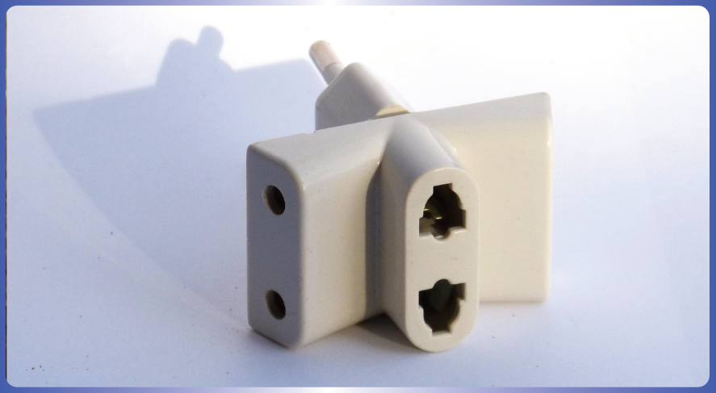
Más allá de los dominios disciplinares listados, McDee‑11 ofrece un marco de trabajo especialmente útil para modelar sistemas híbridos: organizaciones, modelos de negocio o plataformas donde coexisten lógicas distintas que no compiten, sino que se complementan.
El ecosistema Linux funciona como una capa comunitaria gobernada por licencias abiertas, meritocracia y desarrollo distribuido. Red Hat opera como una capa corporativa que empaqueta, certifica y ofrece soporte empresarial sobre ese mismo núcleo. No son capas opuestas: son complementarias. Un adaptador establece la correspondencia entre ambas —el valor añadido de la certificación, el soporte y la integración— sin alterar la identidad de ninguna. El valor de correspondencia mide, en cada momento, el grado de acoplamiento entre la innovación abierta y la propuesta comercial.
Este patrón organizacional dual es directamente representable dentro del marco de trabajo McDee‑11: las capas comunitaria y corporativa se modelan como representaciones distintas, cada una con su propio contexto; la persistencia se diferencia en repositorios públicos y sistemas de suscripción privados; la organización por capas revela cómo ambas capas se relacionan; y el adaptador permite monitorizar el acoplamiento sin forzar la fusión de las capas.
Otros sistemas híbridos que se benefician de este patrón organizacional:
- 🏪 Plataformas multisided (Mercado Libre, Airbnb): capas de oferta, demanda, logística y confianza coexisten con lógicas diferentes.
- 🏢 Organizaciones ambidiestras (exploración / explotación): unidades de I+D y unidades de operación conviven con métricas y ritmos distintos.
- 🆓 Modelos freemium (Spotify, Dropbox): capa gratuita y capa premium comparten infraestructura pero difieren en contexto.
- 🔧 Sistemas producto‑servicio: la capa de producto físico y la capa de servicio digital se acoplan generando intervenciones preventivas.
- 🏛️ Alianzas público‑privadas: capas con marcos normativos, temporalidades y criterios de éxito heterogéneos.
En todos estos casos, McDee‑11 no prescribe cómo deben relacionarse las capas. Proporciona la infraestructura para documentar los contextos, preservar las representaciones, organizar las relaciones por capas y medir las correspondencias sin imponer una fusión artificial de lógicas que, por naturaleza, deben permanecer diferenciadas.
McDee‑11 es, de manera fundamental, un marco de trabajo para organizar, de forma trazable, los procesos mediante los cuales surgen las interpretaciones. No busca producir interpretaciones finales, sino ofrecer una infraestructura donde las interpretaciones —siempre contextuales, siempre trazables, siempre revisables— puedan evolucionar sin perder el registro de las condiciones que las hicieron posibles.
Proyectos del grupo DIGITI como campo de aplicación, investigación y validación
Los siguientes proyectos del Grupo de Investigación DIGITI se proponen como campos concretos de aplicación, investigación y validación o refutación del modelo McDee‑11:
📄 Evaluación de la marcha del amputado transtibial mediante sensores inerciales y ciclogramas: impacto de la desalineación protésica
Camargo Casallas, E., Luengas Contreras, L. A., & Garzón González, E. Y. (2025). Revista Colombiana de Tecnologías de Avanzada (RCTA), 2(46), 123–131.
DOI: 10.24054/rcta.v2i46.4006
Este estudio utiliza sensores inerciales y ciclogramas para caracterizar la marcha protésica bajo desalineaciones controladas. Por su naturaleza multivariable y la necesidad de integrar distintas fuentes de observación, constituye un campo idóneo para la aplicación, experimentación y posible validación o refutación del modelo McDee‑11 en el área de biomecánica y rehabilitación protésica.
🚀 Sondas estratosféricas, telemetría y análisis de señales en condiciones extremas
Camargo Casallas, E., Luengas Contreras, L. A., & grupo DIGITI. Proyecto Sonda Sabio Caldas — Desarrollo de vuelo autónomo estratosférico con instrumentación electrónica y telemetría. Universidad Distrital Francisco José de Caldas.
Este proyecto aplica telemetría, ajuste de resolución de muestreo en condiciones extremas y análisis relacional de sensores inerciales y de control en misiones aeroespaciales. Constituye un entorno experimental propicio para la aplicación del formalismo McDee‑11.
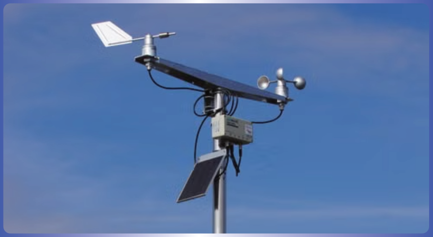
13. Entidades organizacionales y su documentación formal
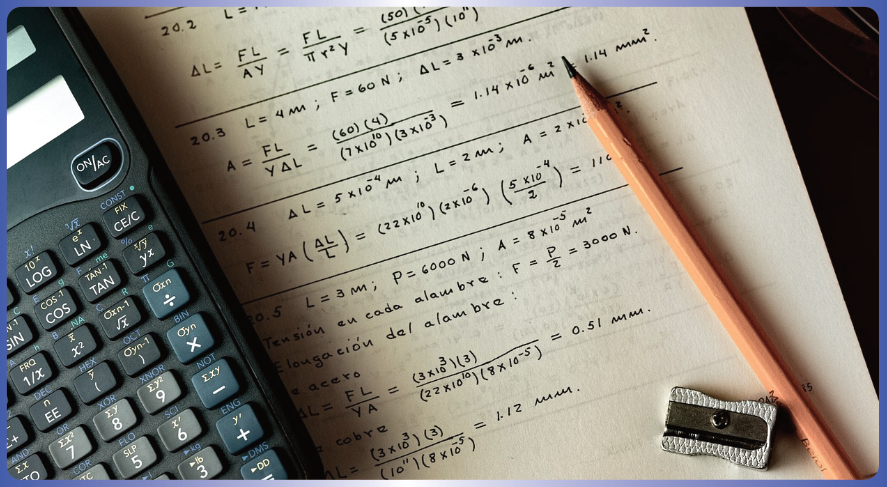
El marco de trabajo McDee‑11 se compone de un conjunto de entidades organizacionales cuyas definiciones formales —estructura interna, propiedades algebraicas, restricciones e invariantes— residen en el Documento Formal. En el contexto de la analogía del estudio fotográfico, cada una de ellas tiene una manifestación concreta:
- Ψ (Psi) — El contexto de observación: la ficha donde se anota qué cámara, con qué configuración, bajo qué criterio y con qué propósito.
- Ω (Omega) — El acto de discretizar la observación: representa la selección de un instante, una configuración y un encuadre concretos dentro del espacio de posibilidades.
- κ (Kappa) — La capa de representación: el acetato impreso, la fotografía que captura una proyección del fenómeno. Puede emerger en cualquier nivel de granularidad.
- μ (Mu) — La organización por capas: la superposición de todos los acetatos compatibles sobre la mesa de trabajo.
- Σ (Sigma) — La persistencia: el archivador donde se guardan los acetatos y las relaciones entre ellos.
- Φ (Phi) — Los adaptadores: los dispositivos que representan el criterio para alinear y comparar dos capas.
- ε (Épsilon) — Las correspondencias: los valores que aparecen en la pantalla auxiliar tras cada comparación y que pueden organizarse en matrices.
La tabla completa de entidades, con sus tipos abstractos, su interpretación como grafos y sus especificaciones formales, está disponible en el Documento Formal. → Doc Formal Los procedimientos para construirlas e instanciarlas en un dominio concreto se describen en el Documento Metodológico. → Doc Metodológico
🧩 McDee‑11 propone que comprender un fenómeno no consiste en elegir la mejor fotografía, sino en organizar el diálogo entre múltiples fotografías del mismo objetivo y entre diferentes interpretaciones de la misma fotografía. Cada imagen constituye una capa de observación; su superposición organizada revela una estructura que ninguna de ellas podría mostrar por separado. Y sobre cada imagen pueden tejerse interpretaciones —literarias, jurídicas, filosóficas— que añaden nuevas capas sin sustituir las anteriores.
No importa lo que se observe: un sistema físico, un proceso biológico, una red de sensores o una ciudad. El camino es el mismo: documentar el contexto, discretizar la observación, capturar la representación, persistir, organizar por capas, acoplar mediante adaptadores, leer las correspondencias y reinterpretar.
El estudio fotográfico ha servido como lenguaje organizacional para mostrar cómo una observación puede evolucionar desde una representación individual hasta un marco de trabajo completo de organización. La fotografía, el acetato, la sala y el cinema multisalas no eran metáforas distintas: eran capas del mismo fenómeno, observado a diferentes escalas y organizado mediante capas complementarias. La teoría de grafos no ha interrumpido la analogía: ha sido, desde el principio, el plano arquitectónico que ahora se hace visible.
La escala pertenece al fenómeno; la capa pertenece a quien observa. McDee‑11 se presenta como un marco de trabajo para organizar el diálogo entre las observaciones de un fenómeno complejo, respetando las escalas que el propio fenómeno ya posee.
No pretende describir directamente el mundo, sino organizar de forma trazable las distintas maneras mediante las cuales lo describimos. Ésa es la función de este marco de trabajo: ofrecer un espacio donde distintas representaciones —científicas, técnicas, humanísticas, jurídicas— puedan coexistir, relacionarse y dialogar sin perder su identidad ni el contexto que las hizo posibles.
El clic nunca fue el comienzo del fenómeno. Fue el comienzo de su organización consciente.
El autor desea expresar su gratitud a la Facultad Tecnológica de la Universidad Distrital Francisco José de Caldas, donde se formó como Tecnólogo en Electrónica, y cuyos proyectos de investigación en biomecánica y ciencias aeroespaciales inspiraron parte de las aplicaciones descritas en este documento.
Los fundamentos teóricos que inspiran McDee‑11 —la complementariedad de sistemas, los principios de control adaptativo, y la autosimilitud organizacional entendida como conservación de patrones relacionales entre escalas de representación— se desarrollan en el Documento Formal, donde se detallan las equivalencias matemáticas y la justificación epistemológica de cada vínculo. → Doc Formal
En la Red de Recursos Digitales McDee‑11, cada concepto dispone de una tarjeta documental autónoma que integra su definición, justificación, bibliografía y enlaces a conceptos vinculados. La tarjeta documental constituye la unidad mínima de trazabilidad: mantiene identidad propia, puede reutilizarse en múltiples documentos y conserva la relación explícita entre el concepto y su fundamentación.
De este modo, la referencia bibliográfica deja de ser un apéndice al final del texto y se convierte en una propiedad del propio nodo de conocimiento. El sistema documental no solo explica un marco de trabajo para organizar representaciones: está organizado siguiendo esa misma arquitectura. Esta autorreferencia metodológica, explícita y trazable, refuerza la coherencia interna del proyecto. → Doc Formal
— McDee‑11 · Desde el Instante de un Clic hacia el marco de la foto-grafía · 2026